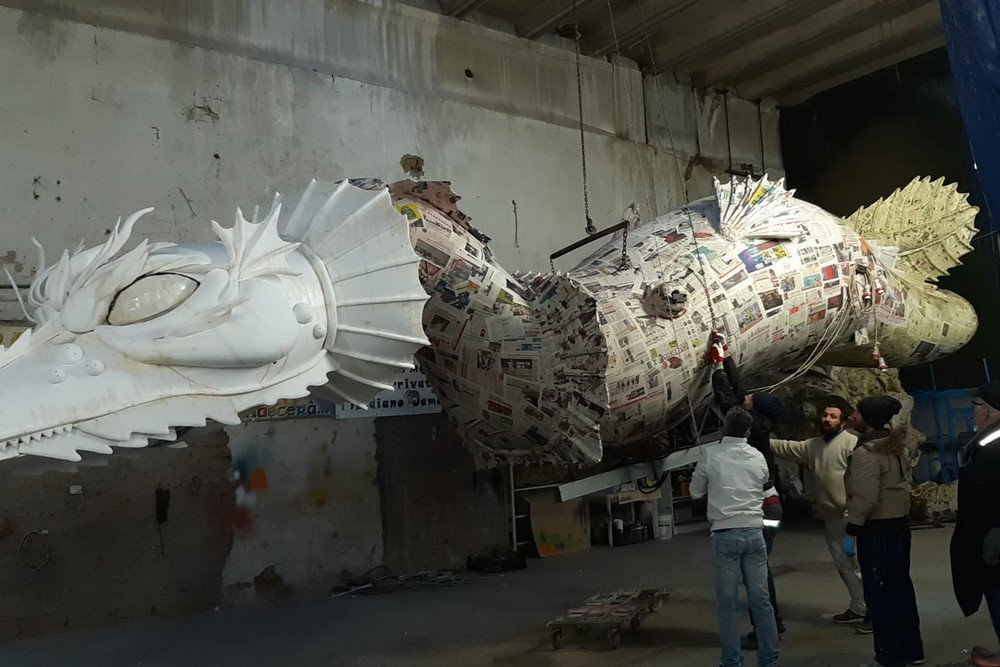

Il carnevale di Civita Castellana non è una festa qualsiasi, quello che prende forma davanti agli occhi di ogni spettatore non è un'ordinata sfilata di maschere, un susseguirsi di colorati personaggi inseriti all'interno di sfavillanti scenografie, o meglio, non è solo questo.
Il carnevale Civitonico è soprattutto una straordinaria celebrazione della libertà e del gioco, un momento sospeso nel tempo e nello spazio, dove scompaiono i limiti di età e le differenze sociali, politiche e culturali. Una festa di origini antichissime, che unisce e diverte spettatori e protagonisti della sfilata.
Oggi è uno dei più importanti d'Italia, grazie alla realizzazione di carri allegorici che sono vere
e proprie opere d'arte in cartapesta, alcune di esse progettate e realizzate da vari artigiani locali,
ai quali si aggiunge la partecipazione di gruppi mascherati, che con i loro costumi, tutti di alta qualità,
realizzati da sarte locali dalle mani d'oro, lo rendono eccezionale, colorato, spontaneo, appassionante,
coinvolgente e soprattutto divertente ed unico.
Tra le tante bizzarrie di questa manifestazione, una delle curiosità è quella che i centralini delle aziende ceramiche
e delle attività commerciali, il giorno di martedì grasso, rispondono dicendo: "Chiuso per Carnevale".
Il carnevale inizia il 17 gennaio e termina il martedì sera prima del giorno delle ceneri, con il
quale comincia la Quaresima. La tradizione vuole che in questo giorno viene trasportato nella piazza centrale
del paese ,scortato dalla banda folcloristica di Civita Castellana "La Rustica" e accompagnato da persone in maschera,
il Re Carnevale, meglio conosciuto con il nome di
'O Puccio, nome col quale, nel dialetto Civitonico,
si indica una "persona che sta ferma immobile, senza fare nulla".
La sera del martedì grasso, viene messo al rogo.
Cala così il sipario sull'edizione del carnevale.

I cantieri del Carnevale Civitonico sono l'essenza del carnevale ed anche un rito. Aprono i battenti nel mese di settembre, quelli in cui vengono realizzati i carri allegorici, mentre da ottobre cominciano a creare i loro progetti i gruppi mascherati. All'interno dei capannoni, che sono tabù per gli estranei, si vive, fino al giorno delle sfilate un atmosfera magica e di festa mentre prendono forma i pupazzi in carta pesta.
Si realizzano i movimenti idraulici, vengono scelti i colori, le luci, le musiche che animano poi la manifestazione più partecipata di Civita Castellana. Alla fine quelle che escono dai cantieri sono vere opere d'arte pronte a superare l'esame della giuria e il giudizio "virtuale" ma sempre severo de "'O Puccio" che staziona in piazza durante il loro passaggio. Sono a tutti gli effetti capolavori che trasmettono entusiasmo ai promotori ed ai partecipanti e tanta voglia di divertirsi ai turisti che scelgono il carnevale della capitale dell'agro falisco. Sono mesi di intenso lavoro per i volontari che fanno parte dei gruppi, che si trasformano nel tempo libero e durante i fine settimana in artigiani, pittori, scenografi e via dicendo con il sogno di essere incoronati vincitori della corrente edizione.
I cantieri sono in continuo sviluppo ed oggi sono autentici laboratori-officine, grazie anche agli investimenti realizzati per migliorare, prima di tutto, la sicurezza, e passare qualche ora con gli amici tra la costruzione di un pupazzo, la realizzazione di una stampa, la scelta di una vernice e dei giochi di luce, che sono diventati, anche questi, motivo di attrazione.